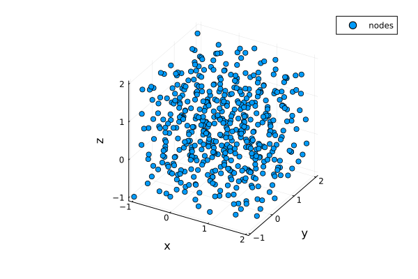
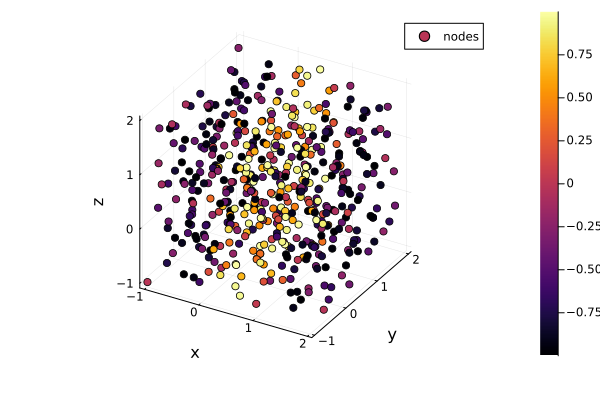
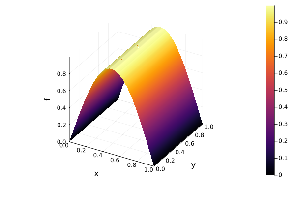

Sets of nodes
Numerical methods based on kernel functions are usually meshfree, i.e. they do not need not any information of connectivity between the different points (a mesh). Instead, they usually solely use a(n) (unstructured) set of points in space $X = \{x_1, \ldots, x_N\}\subset\mathbb{R}^d$ with $N$ nodes $x_i$ of any dimension $d\in\mathbb{N}$. These vectors are also often called, e.g., points, nodes, centers, or data sites and sets of nodes are also sometimes called point clouds. Since meshes can sometimes be cumbersome to create and handle especially in higher space dimensions, kernel methods are often convenient and flexible for high-dimensional problems. In KernelInterpolation.jl, sets of points are called NodeSet and can be of any dimension. You can create NodeSets simply by passing a matrix, where the rows are the different points or by passing a Vector of Vectors:
using KernelInterpolation
nodes = NodeSet([0.0 0.0
0.0 1.0
1.0 0.0
1.0 1.0])
nodes2 = NodeSet([[0.0, 0.0], [0.0, 1.0], [1.0, 0.0], [1.0, 1.0]])NodeSet{2, Float64} with separation distance q = 0.5 and 4 nodes:
[0.0, 0.0]
[0.0, 1.0]
[1.0, 0.0]
[1.0, 1.0]
One characterization of how well distributed a set of nodes is, is the so-called separation distance, which is defined by
\[q_X = \frac{1}{2}\min\limits_{x_i\neq x_j}\|x_i - x_j\|_2.\]
Geometrically, $q_X$ is the radius of the largest ball that can be placed around every node in $X$ such that no two balls overlap. This quantity depends only on the choice of the nodes and is always computed by KernelInterpolation.jl. It can be accessed by calling
q = separation_distance(nodes)0.5The separation distance usually plays a crucial role when estimating the stability properties of kernel methods. Another important geometric property of node sets, often essential for the error analysis of kernel methods, is the so-called fill distance given by
\[h_X = \sup_{x\in\Omega}\min_{x_j\in X}\|x - x_j\|_2,\]
which can be interpreted as the radius of the largest ball that can be placed in $\Omega$ such that the ball does not contain any point in $X$. This quantity depends on the choice of a domain $\Omega\subset\mathbb{R^d}$ that covers $X$ and can therefore not solely be computed by the NodeSet. However, it can be estimated by creating a fine grid of points inside $\Omega$. Let's say we take $\Omega = [0,1]^2$. We can conveniently create a set of equidistant points within any hypercube by calling homogeneous_hypercube:
nodes_fine = homogeneous_hypercube(20, (0.0, 0.0), (1.0, 1.0))NodeSet{2, Float64} with separation distance q = 0.02631578947368418 and 400 nodes:
[0.0, 0.0]
[0.05263157894736842, 0.0]
[0.10526315789473684, 0.0]
[0.15789473684210525, 0.0]
[0.21052631578947367, 0.0]
[0.2631578947368421, 0.0]
[0.3157894736842105, 0.0]
[0.3684210526315789, 0.0]
[0.42105263157894735, 0.0]
[0.47368421052631576, 0.0]
[0.5263157894736842, 0.0]
[0.5789473684210527, 0.0]
[0.631578947368421, 0.0]
[0.6842105263157895, 0.0]
[0.7368421052631579, 0.0]
[0.7894736842105263, 0.0]
[0.8421052631578947, 0.0]
[0.8947368421052632, 0.0]
[0.9473684210526315, 0.0]
[1.0, 0.0]
⋮
This creates a NodeSet with 20 nodes equally spaced along both dimensions. The distance matrix of the two sets, i.e. the matrix with entries $D_{ij} = \|x_i - \xi_j\|_2$ for $x_i\in X$ and $\xi_j$ being the evaluation points in $\Omega$, can be obtained by calling the function distance_matrix:
D = distance_matrix(nodes, nodes_fine)4×400 Matrix{Float64}:
0.0 0.0526316 0.105263 0.157895 … 1.34185 1.3775 1.41421
1.0 1.00138 1.00552 1.01239 0.894737 0.947368 1.0
1.0 0.947368 0.894737 0.842105 1.00552 1.00138 1.0
1.41421 1.3775 1.34185 1.30734 0.105263 0.0526316 0.0Finally, the fill distance is approximated by
h = maximum(minimum(D, dims = 1))0.6698906348083082Note that this is only an estimate. The true fill distance is $\sqrt{2}/2\approx 0.707$ (and reached by placing $x\in\Omega$ at $(0.5, 0.5)^T$). The estimate can be improved by taking a finer evaluation grid.
Next to homogeneous_hypercube, KernelInterpolation.jl provides additional convenience functions to create specific commonly used NodeSets. These are homogeneous_hypercube_boundary to create equally spaced nodes at the boundary of a hypercube, random_hypercube and random_hypercube_boundary to create random uniformly distributed nodes inside or at the boundary of a hypercube, and random_hypersphere and random_hypersphere_boundary for random uniformly distributed nodes inside or at the boundary of a hypersphere. Note that the first argument n of the homogeneous_* functions denotes the number of points along each dimension, while for the random_* function it denotes the number of total generated nodes.
Other sampling methods for hypercubes of any dimension can be obtained by using the package QuasiMonteCarlo.jl. We can simply pass the (transposed) result of any sampling algorithm from QuasiMonteCarlo.jl to the constructor of NodeSet. To create, e.g., 500 Halton points in a box bounded by $[-1.0, -1.0, -1.0]$ and $[2.0, 2.0, 2.0]$ we can run:
using QuasiMonteCarlo: sample, HaltonSample
nodes_matrix = sample(500, [-1.0, -1.0, -1.0], [2.0, 2.0, 2.0], HaltonSample())
nodes_halton = NodeSet(nodes_matrix')NodeSet{3, Float64} with separation distance q = 0.029226325908781006 and 500 nodes:
[-0.997, -0.997, -0.997]
[0.5030000000000001, 0.0029999999999998916, -0.397]
[-0.247, 1.0030000000000001, 0.20300000000000007]
[1.2530000000000001, -0.6636666666666666, 0.8030000000000004]
[-0.622, 0.33633333333333315, 1.403]
[0.8780000000000001, 1.3363333333333332, -0.877]
[0.1280000000000001, -0.33033333333333337, -0.277]
[1.6280000000000001, 0.6696666666666664, 0.3230000000000002]
[-0.8095, 1.6696666666666666, 0.9230000000000005]
[0.6905000000000001, -0.885888888888889, 1.5230000000000001]
[-0.0595, 0.11411111111111105, -0.7569999999999999]
[1.4405000000000001, 1.1141111111111113, -0.15700000000000003]
[-0.4345, -0.5525555555555556, 0.44300000000000006]
[1.0655000000000001, 0.4474444444444443, 1.0430000000000001]
[0.3155000000000001, 1.4474444444444439, 1.6430000000000002]
[1.8155000000000001, -0.2192222222222222, -0.6369999999999999]
[-0.90325, 0.7807777777777778, -0.03699999999999981]
[0.5967500000000001, 1.7807777777777773, 0.5630000000000002]
[-0.15325, -0.7747777777777778, 1.1630000000000003]
[1.3467500000000001, 0.225222222222222, 1.763]
⋮
For the available sampling algorithms in QuasiMonteCarlo.jl, see the overview in the documentation.
Another possibility to create more advanced NodeSets is by using the package Meshes.jl and the sampling algorithms defined therein. For example, we can create a regularly sampled set of nodes on the surface of a sphere by running:
using Meshes: Meshes, Sphere, Point, RegularSampling
sphere = Sphere(Point(0.0, 0.0, 0.0), 1.0)
sampler = RegularSampling(20, 30)
points = Meshes.sample(sphere, sampler)
nodes = NodeSet(collect(points))NodeSet{3, Float64} with separation distance q = 0.015579159045324071 and 602 nodes:
[0.14904226617617444, 0.0, 0.9888308262251285]
[0.2947551744109042, 0.0, 0.9555728057861408]
[0.4338837391175581, 0.0, 0.9009688679024191]
[0.563320058063622, 0.0, 0.8262387743159949]
[0.6801727377709194, 0.0, 0.7330518718298263]
[0.7818314824680298, 0.0, 0.6234898018587336]
[0.8660254037844386, 0.0, 0.5]
[0.9308737486442042, 0.0, 0.3653410243663951]
[0.9749279121818236, 0.0, 0.22252093395631448]
[0.9972037971811801, 0.0, 0.07473009358642434]
[0.9972037971811801, 0.0, -0.07473009358642434]
[0.9749279121818236, 0.0, -0.2225209339563143]
[0.9308737486442042, 0.0, -0.3653410243663951]
[0.8660254037844387, 0.0, -0.4999999999999999]
[0.7818314824680298, 0.0, -0.6234898018587336]
[0.6801727377709195, 0.0, -0.7330518718298262]
[0.563320058063622, 0.0, -0.8262387743159949]
[0.43388373911755823, 0.0, -0.900968867902419]
[0.2947551744109042, 0.0, -0.9555728057861408]
[0.1490422661761746, 0.0, -0.9888308262251285]
⋮
For more information on the available sampling algorithms in Meshes.jl, see the documentation. In the documentation of Meshes.jl, you can also find information on how to create more complex geometries like ellipsoids, tori, and many more. In general, a PointSet from Meshes.jl or a Vector of Points can be directly passed to the constructor of a NodeSet and vice versa can a NodeSet be passed to the constructor of a PointSet.
More complicated NodeSets consisting of different shapes can be created, e.g., by mergeing different NodeSets.
Visualizing NodeSets
To visualize a NodeSet, there are currently two possibilities. The first one uses Plots.jl. After installing and loading Plots.jl, we can then simply call plot on any 1D, 2D, or 3D NodeSet to plot it.
using Plots
plot(nodes_halton)
You might want to consider using other plotting backends, e.g. PyPlot.jl can be used by additionally calling pyplot() before plot in the above code snippet. Refer to the documentation of Plots.jl for the different available backends. In order to color the nodes according to the values of a function (or an Interpolation) at the nodes, you can additionally pass the vector of function values as keyword argument zcolor (note that you can treat a NodeSet as a usual array, e.g., broadcasting works with the common dot syntax).
f(x) = sinpi(x[1])
plot(nodes_halton, zcolor = f.(nodes_halton))
For 1D or 2D NodeSets you can also pass a function (or, again, an object of Interpolation), which is then used to determine the values in the vertical direction. For a surface plot of a function based on a set of nodes, you can, e.g., run the following
plot(nodes_fine, f, st = :surface)
As an alternative to plotting from within Julia, you can save NodeSets to the commonly used VTK files and then view the result, e.g., in ParaView or VisIt. You can save a NodeSet simply by using vtk_save and passing a filename as well as the NodeSet:
vtk_save("nodes_halton", nodes_halton)1-element Vector{String}:
"nodes_halton.vtu"Again, you can additionally save node values by passing additional functions or vectors (of the same size as the NodeSet), which can also be visualized with ParaView or VisIt. Note that you can also read back in a NodeSet (and possibly the additional node values) by using vtk_read:
nodes_halton2, _ = vtk_read("nodes_halton.vtu")
all(nodes_halton2 .== nodes_halton)true